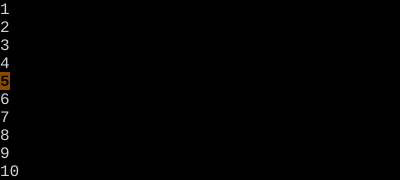
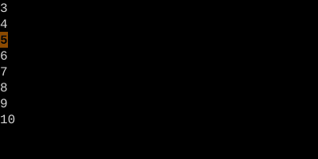

The z Family
Folding, scrolling, spell. The most thematically scattered prefix.
z handles three loosely-related families: scroll positioning (zz, zt, zb), folding (zo, zc, zf, zR), and spell suggestions (z=, zg, zw).
The z prefix is even more scattered than g. Three separate families share the prefix because Vim ran out of one-key real estate: scrolling, folding, and spell-checking.
Reference (most-used)
| Key | Family | Action |
|---|---|---|
| zz | Scroll | Cursor's line → middle |
| zt | Scroll | Cursor's line → top |
| zb | Scroll | Cursor's line → bottom |
| z. | Scroll | Like zz, cursor → first non-blank |
| zs / ze | Scroll | Horizontal: cursor → left / right |
| zo | Fold | Open one fold |
| zc | Fold | Close one fold |
| zO / zC | Fold | Open / close folds recursively |
| za | Fold | Toggle one fold |
| zR | Fold | Open all folds |
| zM | Fold | Close all folds |
| zr / zm | Fold | Open / close one level |
| zf{motion} | Fold | Create fold over motion |
| zd / zE | Fold | Delete this fold / all folds |
| z= | Spell | Suggest corrections |
| zg / zw | Spell | Mark word as good / wrong |
| zn / zN | Fold | Disable / re-enable folding |
Worked example — zz zt zb
Viewport positioning with z.


Watch
See also: The g Family, Centering the Cursor, Folding